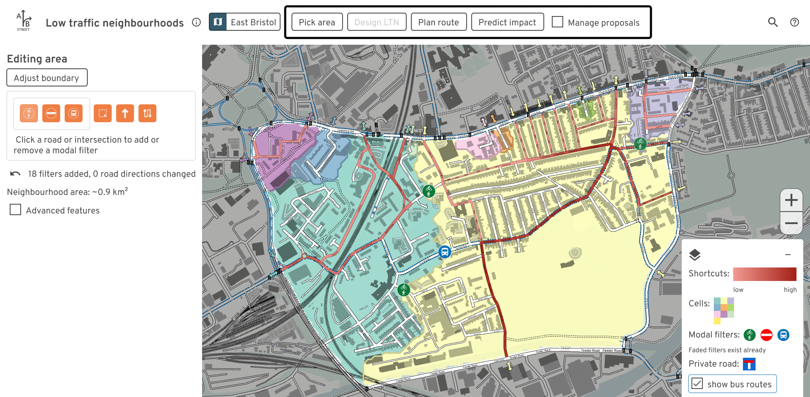

Low-traffic neighborhoods
Launch the tool in your web browser
This free tool lets anybody study existing and proposed low-traffic neighborhoods (LTNs). Experiment with modal filter placement, and examine the impacts on drivers trying to cut through residential areas.

The software runs faster if you install it. No mobile/tablet support. Unzip,
then run ltn.exe or ltn.
Contact dabreegster@gmail.com with any feedback or file an issue on Github.
Use this in your area
A number of individuals and campaign groups have been using this tool around Islington, Brighton, Hyde Park, Nottingham, and Lyon. Bristol City Council has used it in a public consultation to co-design a liveable neighbourhood with residents.
Want to start doing the same in your area? You can use the downloadable version and import an area yourself. If you want help, or if you want to deploy the tool for a consultation or campaign, please email dabreegster@gmail.com. Users will be able to anonymously upload and share their proposals.

Videos
How modal filters affect shortcuts and cells:
How filters affect driving routes:
Credits
Main team:
- Dustin Carlino: project lead
- Madison Wang: UX design
- Cindy Huang: UX design
- Jennifer Ding: training material and outreach
Alumni from A/B Street (the LTN tool is built upon past work):
- Michael Kirk
- Yuwen Li
None of this work would be possible without OpenStreetMap contributors.
Inspiration / early testers giving great feedback:
- This tool was initially inspired by Brian Deegan's workshop on LTN planning. We want to involve communities in planning local schemes, and get everybody collaborating to solve the same problems.
- Cyclestreets LTN map using OpenStreetMap
- Will Petty's QGIS tool
- Sustrans LTN guide
- Design help from Duncan Geere and Fernando Benitez
- Robin Lovelace
- Many others...
This work was expanded from an initial prototype while Dustin worked at the Alan Turing Institute, where he's funded by the UKRI grant for the ASG program.
Concept art
Our hope is that this tool makes it easier for communities to come together and collaboratively design neighborhoods that work well for everyone. Special thanks to Scriberia for illustrating this idea:

This image was created by Scriberia for The Turing Way community and is used under a CC-BY 4.0 licence for reuse. Zenodo. DOI 10.5281/zenodo.3332807
Documentation
- 2-minute introduction video
- 8-minute tutorial video
- Written user guide
- March 2022 AI:UK presentation
Features
- Editing
- Place new modal filters (including bus gates and diagonal filters)
- Switch the direction of one- and two-way streets
- Specify custom neighbourhood boundaries
- Create new unsignalized or signalized crossings
- Analyze
- Calculate likely shortcuts drivers may take through an area. Visualize individual paths and a heatmap of all traffic.
- Visualize whether filters successfully split an area into smaller cells, making a "water-tight" scheme free from shortcuts
- See how edits affect individual routes
- Based on crossings, see porosity between adjacent neighbourhoods
- Quickly get a sense of where traffic may detour outside the neighbourhood in the short-term, using travel demand models. Browse through individual example trips that change route due to edits.
- Collaborate
- Save proposed edits and quickly swap between multiple options, comparing them
- Upload proposals anonymously and share a URL